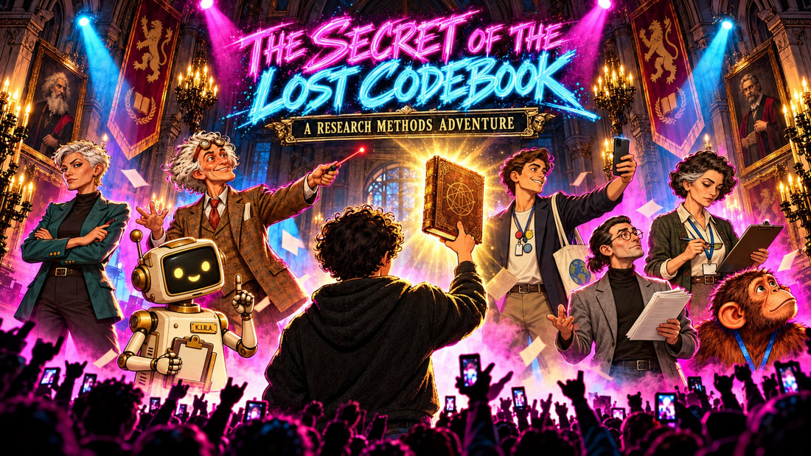

The Secret of the Lost Codebook is a point-and-click adventure in the LucasArts tradition that teaches research methods. A grad student with a deadline and an empty research folder sets out to get one real question out of the one professor known for producing them. They spend the semester turning it into an entire research project, one absurd department "chapter" at a time. In the end they find that the mythical Codebook everyone whispers about was never anything more than Methods.

It has five acts and 19 rooms, all painted and fully voice-acted. It runs free in any browser, on a computer or a phone. Each act is one stage of a single study: the question, theory, data, evidence, and the annual meeting. Along the way you play Systems Theory Bingo, referee a Founders' Rap Battle, face an Ethics Tribunal, and gamble at the Significance Casino. The wrong choices are all allowed (the p-hacked "discovery", the inflated claim). The game stamps them and makes you live with them later.
The game is free to play and free to use in teaching.
Each point can be claimed once per student number and once per device.
Two documents are included for instructors: every act's lessons word for word, and a full walkthrough of the solution, including the wrong branches.
Play it: https://lostcodebook.org
For teachers: https://lostcodebook.org/teach
Short version: A painted, voiced point-and-click adventure that teaches research methods, from the first question to the annual meeting. Free in any browser, and ready for classes: register a course and your students can claim bonus points.